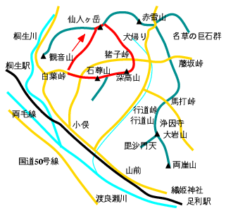

仙人ヶ岳〜深高山
天気：☀️
メンバー：T
行程：白葉峠 8:00 …仙人ヶ岳(663m) 10:00 …猪子峠 12:30 …深高山(506m) 13:00 …石尊山 13:30 …白葉峠

仙人ヶ岳第2弾！風が強く、花粉も飛んでくしゃみ鼻水連発の山登りでした。
白葉（しらっぱ）峠に車を置き、少し桐生側に戻って山に入る。けもの道を登り、藪＋杉林＋倒木の尾根を行く。とても冴えない。が、上部は小さなピークの登降で変化が付いて歩きやすい道となり、なかなか味が出てくる。
頂上付近はマンサクの黄色い花が結構咲いていた。奥仙人から猪子峠へは、松田川のダム湖を見下ろしながらの縦走となる。途中、犬帰りの通過は久しぶりの鎖場でちょっと緊張した。
杉林の中の猪子峠を過ぎると、雰囲気が変って暢気なハイキングコースとなる。深高山頂上からは南の眺めが良い。ほとんど平坦な尾根を石尊山へ。この尾根筋からは仙人ヶ岳の破風状の稜線が見える。
石尊山見晴台まで来れば、後はジョギングで良く来るコース。白葉峠の車まで戻り、帰宅した。